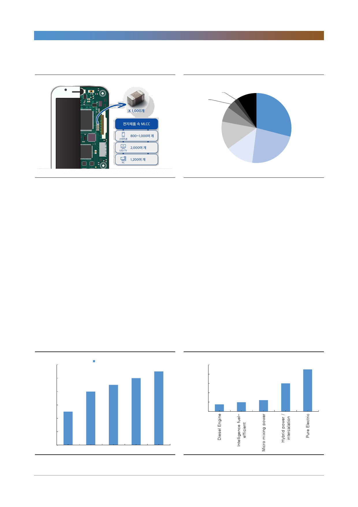

삼성전기(009150)
[그림 6] 전자기기에 사용되는 MLCC
[그림 7] MLCC 시장점유율 – 삼성전기 2위
Kemet
AVX 2%
4%
TDK
7%
Chinese
Locals
9%
Murata
29%
궈쥐
13%
자료: 삼성전기, 한국투자증권
Taiyo
Yuden
13%
자료: 언론보도, 한국투자증권
삼성전기
23%
수요가 증가하는 이유는 다음의 세가지다. 첫번째는 전자기기의 다기능화, 소형화
추세다. 아이폰 시리즈를 예로 들면 신제품이 출시될 때마다 부품의 성능이 향상
되면서 기기당 MLCC 필요량이 늘어난다. 아이폰6S의 경우 기기당 약 500개의
MLCC가 필요했는데, 지난해 출시한 아이폰X는 기기당 1,000개의 MLCC가 필
요하다. 이는 비단 스마트폰뿐만 아니라 TV, 컴퓨터 등 대부분의 전자제품에서
성능 개선 시 동일하게 MLCC 필요량이 늘어난다.
두번째로는 새로운 수요산업의 등장이다. 가장 큰 산업은 자동차의 전장화다. 자
동차산업은 현재 전장화가 빠르게 진행 중이다. 기존 내연기관에서 전기차로의
발전이 이뤄지면서 대당 필요한 MLCC의 수량도 빠르게 늘어나고, 높은 온도와
압력에서 견디는 고사양의 MLCC가 필요하다. [그림 9]에서처럼 대당 MLCC 필
요량이 순수 전기차의 경우 내연기관차에 비해 6배 더 많다. 자동차용 MLCC는
IT용에 비해 수익성이 월등히 좋아 업계 선두인 Murata 등의 경우 현재 자동차
용 MLCC를 중심으로 투자를 진행 중이다.
[그림 8] 아이폰 탑재 MLCC 수량 변화
(개)
1,200
탑재 MLCC
1,000
800
600
400
200
0
iPhone4s iPhone6
자료: Chlue Research, 한국투자증권
iPhone7
iPhone8
iPhoneX
[그림 9] 차량 연료별 MLCC 필요량
(개)
20,000
16,000
12,000
8,000
4,000
0
자료: Chlue Research, 한국투자증권
4